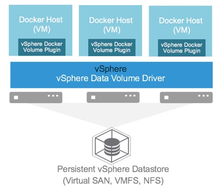

Introduction
Containers have changed the way applications are packaged and deployed. Not only containers are efficient from infrastructure utilization point of view, they also provide strong isolation between process on same host. They are lightweight and once packaged can run anywhere. Docker is the most commonly used container runtime technology and this user guide outlines how vSphere is compatible with Docker ecosystem.
Persistent Storage in Container World
Although it is relatively easy to run stateless Microservices using container technology, stateful applications require slightly different treatment. There are multiple factors which need to be considered when you think about handling persistent data using containers such as:
- Containers are ephemeral by nature, so the data that needs to be persisted has to survive through the restart/re-scheduling of a container.
- When containers are re-scheduled, they can die on one host and might get scheduled on a different host. In such a case the storage should also be shifted and made available on new host for the container to start gracefully.
- The application should not have to worry about the volume/data and underlying infrastructure should handle the complexity of unmounting and mounting etc.
- Certain applications have a strong sense of identity (For example. Kafka, Elastic etc.) and the disk used by a container with certain identity is tied to it. It is important that if a container with a certain ID gets re-scheduled for some reason then the disk only associated with that ID is re-attached on a new host.
vSphere Docker Volume Service (vDVS)

vSphere Docker Volume Service technology enables running stateful containers backed by storage technology of choice in a vSphere environment. vDVS which works with proven storage technologies from VMWare and is easy to install and use from end user perspective while retaining visibility and control in hands of a vSphere administrator.
Some of key features of vDVS are:
- Enterprise class storage: You can use vDVS with proven enterprise class technologies such as VMWare vSAN, VMFS, NFS etc.
- Security & RBAC: The vSphere admin can manage the security and access controls on the underlying hosts on a set of hosts or data centers.
- Simple to use: It is as easy to use as other docker APIs and from end user’s perspective there is no need for additional configuration etc.
- Docker Compatibility: vSphere Docker Volume Service is 100% Docker compatible and integrates with Docker Swarm to extend High Availability feature provided by Swarm
- Storage Policy Management: vSphere Docker Volume Service brings vSphere’s advanced storage feature like policy management to Docker ecosystem.
This service is integrated with Docker Volume Plugin framework. It does not need credential management or configuration management.
vDVS abstracts underlying enterprise class storage and makes it available as docker volumes to a cluster of hosts running in vSphere environment
Documentation Version
The documentation here is for the latest release. The current master documentation can be found in jekyll/markdown format in jekyll-docs folder. For older releases, browse to releases select the release, click on the tag for the release and browse the docs folder.